건설기계설비산업기사 (2004-03-07 기출문제)
1과목: 기계제작법
1. 마이크로미터 중 한계게이지로 사용할 수 있는 것은?
- 나사마이크로미터
- 지시마이크로미터
- 기어마이크로미터
- 내경마이크로미터
(정답률: 알수없음)

2. 스패너(spanner)를 단조하는데 보통 많이 사용되는 단조방식은 다음 중 어느 것인가?
- 형(型)단조
- 자유(自由)단조
- 업셋(upset)단조
- 회전스웨이징(回轉 swaging)
(정답률: 알수없음)
3. 장시간 연삭가공시 면이 변화되어 최초의 숫돌면 모양으로 형상수정을 위하여 다이아몬드 드레서(diamond dresser)로 연삭숫돌을 재 가공하는 것은?
- 로딩(loading)
- 글레이징(glazing)
- 트루잉(truing)
- 그라인딩 버언(grinding burn)
(정답률: 알수없음)
4. 단조용 강재에서 유황의 함유량이 많을 때, 가장 관계가 깊은 것은?
- 인성증가
- 적열취성
- 가소성증가
- 냉간취성
(정답률: 알수없음)
5. 소재의 직경 20 mm, 소재의 두께 0.2 mm, 전단저항 36kgf/mm2인 경우 블랭킹(blanking)에 필요한 힘을 구하면?
- 약 145kgf
- 약 452kgf
- 약 753kgf
- 약 2260kgf
(정답률: 알수없음)
6. 창성법(generating method)에 의하여 기어의 치형을 절삭하는 공작기계와 공구는?
- 기어셰이퍼와 호브
- 호빙머신과 호브
- 밀링머신과 기어
- 호빙머신과 피니언
(정답률: 알수없음)
7. 강, 구리, 황동의 작은 단면의 선, 봉, 관 등을 접합하는데 가장 적합한 저항 용접은?
- 점용접(spot welding)
- 시임용접(seam welding)
- 프로젝션용접(projection welding)
- 업셋용접(upset welding)
(정답률: 알수없음)
8. 측정방법의 종류가 아닌 것은?
- 영위법
- 보상법
- 치환법
- 상각법
(정답률: 알수없음)
9. 고속도 절삭용 공구에서 칩이 공구의 경사면 위를 미끄러질 때 마찰력에 의해 공구 상면에 오목하게 파지는 공구의 마모를 무엇이라고 하는가?
- 플랭크마멸
- 크레이터마멸
- 치핑
- 구성인선
(정답률: 알수없음)
10. 버니어캘리퍼스의 어미자에 새겨진 19눈금(19㎜)을 부척(버니어)에서 20등분 하였을 때 최소 측정값은?
- 0.02㎜
- 0.002㎜
- 0.⑤㎜
- 0.0⑤㎜
(정답률: 알수없음)
11. 용접의 결점에 해당되지 않는 것은?
- 품질검사가 곤란하다.
- 용접모재의 재질에 대한 영향이 크다.
- 제품의 두께가 두껍고 가공공수가 많이 든다.
- 응력집중에 대하여 극히 민감하다.
(정답률: 알수없음)
12. 전해연마의 결점에 해당되지 않는 것은?
- 깊은 홈이 제거되지 않는다.
- 내마멸성, 내부식성이 나쁘다.
- 모서리가 둥글게 된다.
- 주물제품은 광택있는 가공면을 얻을 수 없다.
(정답률: 알수없음)
13. 측정기중 아베(Abbe)의 원리에 맞는 구조를 갖고 있는 것은?
- 하이트 게이지
- 외측 마이크로 미터
- 캘리퍼형 내측마이크로미터
- 버니어 캘리퍼스
(정답률: 알수없음)
14. 소성가공에서 열간가공이란?
- 냉각하면서 가공한다.
- 변태점 이상에서 가공한다.
- 600℃ 이상에서 가공한다.
- 재결정온도 이상에서 가공한다.
(정답률: 알수없음)
15. 주물자를 선택할 때 무엇을 기준으로 하는가?
- 목재의 재질
- 주물의 가열온도
- 목형의 중량
- 주물의 재질
(정답률: 알수없음)
16. 급속귀환 운동기구를 사용하지 않는 공작기계는?
- 플레이너
- 세이퍼
- 슬로터
- 드릴링 머신
(정답률: 알수없음)
17. 지름 500㎜, 길이 500㎜의 롤러로 두께 25㎜의 연강판을 두께 20㎜로 열간 압연할 때 압하율은?
- 28%
- 25%
- 20%
- 14%
(정답률: 알수없음)
18. 열처리 조직 중 경도가 가장 큰 것은?
- 마텐사이트
- 시멘타이트
- 트루스타이트
- 솔바이트
(정답률: 알수없음)
19. 모형을 왁스(wax)같은 재료로 만들어서 매우 복잡한 주물을 제작할 때 가장 좋은 주조법은?
- 탄산가스 주조법(CO2-process)
- 인베스트먼트 주조법(investment process)
- 다이캐스팅 주조법(die casting process)
- 원심 주조법(centrifugal casting process)
(정답률: 알수없음)
20. 건식법과 습식법으로 구분하여 가공하는 것은?
- 브로칭
- 래핑
- 슈퍼피니싱
- 호빙
(정답률: 알수없음)
2과목: 재료역학
21. 직경이 50mm인 환봉에 75 MPa의 굽힘응력이 생기도록 하는 굽힘모멘트의 크기는 몇 N.m인가?
- 184.1
- 206.4
- 920.4
- 1230.5
(정답률: 알수없음)
22. 그림과 같은 원형 단면인 원주의 접선 x-x축에 대한 단면 2차 모멘트는?
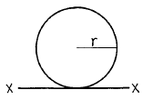
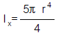
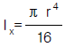
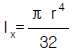
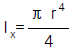
(정답률: 알수없음)
23. 길이 1 m, 지름 2 cm의 강재를 10 kN의 힘으로 인장했을 때 0.15 mm 늘어났다. 이 재료의 탄성계수는 몇 GPa인가?
- 212
- 1⑤
- 2⑤
- 232
(정답률: 알수없음)
24. 그림은 어떤 재료의 응력-변형률 선도이다. 이 재료의 허용 응력은 다음 중 어느 구간에서 설정해야 하는가?
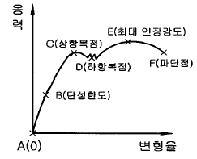
- A-B 구간
- B-C 구간
- C-D 구간
- D-E 구간
(정답률: 알수없음)
25. 지름 10 cm이고 길이가 1 m인 Al봉에 98 N.m의 비틀림모멘트가 작용하고 있다. 이 때 Al봉에 축적된 탄성에너지는 몇 N.m인가? (단,Al의 전단탄성계수 GAl = 26 × 109 N/m2)
- 1.88 × 10-2
- 2.88 × 10-1
- 3.88
- 48.8
(정답률: 알수없음)
26. 지름 30㎝의 원형 단면을 가진 보가 그림과 같은 하중을 받을 때 이 보에 발생되는 최대 굽힘응력은 몇 MPa 인가?
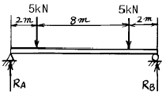
- 1.77
- 2.77
- 3.77
- 4.77
(정답률: 알수없음)
27. 두께 12mm, 인장강도 360 MPa인 연강판으로 0.6 MPa의 내압을 받는 원통을 만들려면 안지름을 몇 cm로 하면 되는가? (단, 안전계수는 4로 한다.)
- 120
- 180
- 240
- 360
(정답률: 알수없음)
28. 길이 4m 이고 양단이 단순지지되어 고정된 외나무 다리 위를 몸무게 1000N 인 사람이 걸어서 지나간다면 다리에 작용하는 최대 전단력은 몇 N 인가? (단, 다리 위를 한사람씩 지나간다.)
- 250
- 500
- 1000
- 4000
(정답률: 알수없음)
29. 그림과 같이 축하중 P가 작용할 때 α° 만큼 경사진 단면에서의 전단응력을 τ, 수직응력을 σn 이라할 때 다음 표현 중 옳은 것은? (단, 축방향에 수직한 단면적은 A이다.)
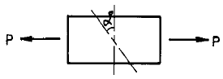
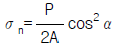
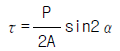
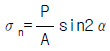
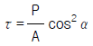
(정답률: 알수없음)
30. 그림과 같은 하중을 받는 단순보의 반력 RA 및 RB는?
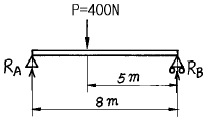
- RA＝100N, RB＝300N
- RA＝150N, RB＝250N
- RA＝300N, RB＝100N
- RA＝250N, RB＝150N
(정답률: 알수없음)
31. 같은 동력을 전달하는 지름 d인 중실축의 비틀림각 θs와 안지름이 바깥지름 d 의 1/3인 중공축의 비틀림각 θh와의 비 θs/θh 는 얼마인가?
- 26/27
- 15/16
- 80/81
- 31/32
(정답률: 알수없음)
32. 온도 10 ℃에서 단면적 5 cm2, 길이 1 m인 균일 단면봉의 양단을 강성벽으로 고정하고, 온도를 50 ℃로 올렸을 때 벽에 미치는 힘의 크기는 몇 kN 인가? (단, 봉의 탄성계수 E = 210 GPa 이고, 선팽창계수 α = 1.1×10-5/℃ 이다.)
- 9.24
- 25.5
- 46.2
- 50.2
(정답률: 알수없음)
33. 아래 그림과 같은 30cm × 30cm 의 정사각형 단면의 그 측면에서 지름 24 cm인 반원형을 오려내어 I형 단면의 보를 만들었다. 이 재료의 인장 및 압축응력이 σω =10MPa 라면 이 보가 안전하게 받을 수 있는 최대 굽힘모멘트는 몇 kN.m 인가?
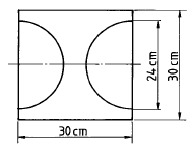
- 24.1
- 241
- 34.1
- 341
(정답률: 알수없음)
34. 단면 12cm2, 길이 3 m의 연강축이 양단에서 단순지지되어 있을 때 자중에 의한 최대굽힘 모멘트는 몇 N.m 인가? (단, 연강의 비중량은 77 kN/m3이다.)
- 84
- 104
- 158
- 185
(정답률: 알수없음)
35. 그림과 같이 직사각형 단순보가 그 중앙에서 집중하중 P를 받고 있다. 허용 전단응력을 2MPa라 하면，하중 P의 안전값은 몇 kN 인가？
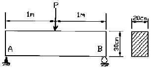
- 80
- 160
- 240
- 320
(정답률: 알수없음)
36. 그림과 같은 직경 d의 원형 단면에서 단면계수를 최대로 하기위한 직사각형 단면(폭×높이 = bxh)을 얻으려면 b와 h의 비는 얼마인가?
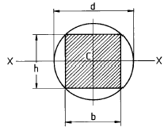
- 1 : 1
- 1 : √2
- 1 : √3
- √2 : √3
(정답률: 알수없음)
37. 같은 조건에서 양단고정의 기둥은 일단고정 타단자유의 기둥보다 몇 배의 안전하중을 가할 수 있는가?
- 2배
- 4배
- 8배
- 16배
(정답률: 알수없음)
38. 그림과 같은 굽힘 강성계수가 EI인 외팔보에서 자유단의 처짐각(θB)과 처짐량(δB)을 구하는 식으로 맞는 것은? (단, 그림에서 AM은 굽힘모멘트 선도의 면적, 는 b점에서 도심까지의 거리이다.)
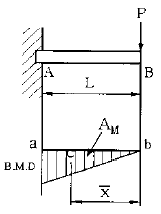
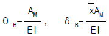
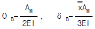
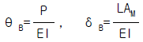
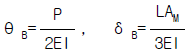
(정답률: 알수없음)
39. 폭 20cm, 높이 10cm인 직사각형 단면의 외팔보가 길이는 100cm이고, 자유단에 1500N의 집중하중을 받을 때 최대굽힘응력(σmax)은 몇 MPa인가?
- 4.5
- 2.25
- 22.5
- 12
(정답률: 알수없음)
40. 한변의 길이 20 ㎝, 길이가 3 m인 정사각형 단면의 목재기둥이 하단고정留상단자유의 상태에 있다．이 기둥에 축방향의 압축력이 작용할 때 최대 허용하중은 몇 kN인가? (단，목재의 탄성계수는 E= 100 GPa로 하고，오일러공식을 적용하되 안전율은 ５이다.)
- 365
- 730
- 1825
- 3655
(정답률: 알수없음)
3과목: 기계설계 및 기계재료
41. 스프링 상수 6㎏f/㎝인 코일 스프링에 30㎏f의 하중을 걸면 처짐은 얼마가 되는가?
- 60㎜
- 50㎜
- 40㎜
- 30㎜
(정답률: 알수없음)
42. 맞대기 용접이음에서 하중을 W, 용접부의 길이를 ℓ , 판두께를 t라 할 때 용접부의 인장응력을 계산하는 식은?
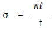
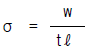
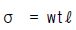
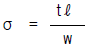
(정답률: 알수없음)
43. 길이에 비하여 지름이 아주 작은 롤러 지름이 2∼5 mm로 보통 리테이너가 없는 베어링은?
- 원통 롤러 베어링
- 구면 롤러 베어링
- 니들 롤러 베어링
- 플렉시블 롤러 베어링
(정답률: 알수없음)
44. 9600 ㎏f.cm 토크를 전달하는 지름 50 ㎜인 축에 적합한 묻힘 키이(12 mm × 8 mm)의 길이는? (단, 키이의 전단강도만으로 계산하고, 키이의 허용전단응력 τ= 800 ㎏f/㎝2이다.)
- 40 ㎜
- 50 ㎜
- 5.0 ㎜
- 4.0 ㎜
(정답률: 알수없음)
45. 순철은 1539℃에서 응고하여 상온까지 냉각하는 동안 A4, A3, A2의 변태를 한다. A2변태 설명이 아닌 것은?
- 큐리점
- 자기 변태점
- 동소 변태점
- 자성만의 변화를 가져오는 변태
(정답률: 알수없음)
46. 순철(α 철)의 격자구조는?
- 면심입방격자
- 면심정방격자
- 체심입방격자
- 조밀육방격자
(정답률: 알수없음)
47. 처음에 주어진 특정 모양의 제품을 인장하거나 소성 변형된 제품이 가열에 의하여 원래의 모양으로 돌아가는 현상은?
- 신소재 효과
- 형상기억 효과
- 초탄성 효과
- 초소성 효과
(정답률: 알수없음)
48. 알루미늄이 공업재료로 사용되는 특성이 아닌 것은?
- 무게가 가볍다.
- 열전도도가 우수하다.
- 강도가 작다.
- 소성가공성이 우수하다.
(정답률: 알수없음)
49. 유체의 평균속도가 10 cm/s이고 유량이 150 cm3/s일 때 관의 안지름은?
- 약 44 mm
- 약 48 mm
- 약 52 mm
- 약 38 mm
(정답률: 알수없음)
50. 브리넬 경도 시험기에서 강철볼(steel ball)의 지름이 2mm, 하중이 471kgf이고 시편에 압입한 강철볼의 깊이가 0.5mm일 때 브리넬 경도 HB는?
- 75
- 150
- 37.5
- 300
(정답률: 알수없음)
51. 보통운전으로 회전수 300rpm, 베어링하중 110㎏f를 받는 단열레디얼 볼 베어링의 기본부하용량은 얼마가 되는가? (단, 수명은 6만 시간이고, 하중계수는 1.5이다.)
- 1693㎏f
- 165.0㎏f
- 1650㎏f
- 169.3㎏f
(정답률: 알수없음)
52. 다음 중 표면처리에 속하지 않는 열처리는?
- 연질화
- 고주파 담금
- 가스침탄
- 심랭처리
(정답률: 알수없음)
53. 12 ㎧의 속도로 전달마력 48 PS를 전달하는 평벨트의 이완측 장력으로 옳은 것은? (단, 긴장측의 장력은 이완측 장력의 3배이고, 원심력은 무시한다.)
- 100㎏f
- 150㎏f
- 200㎏f
- 250㎏f
(정답률: 알수없음)
54. Do = m(Z + 2)의 공식은 기어의 무엇을 구하기 위한 것인가? (단, m = 모듈, Z = 잇수이다.)
- 바깥지름
- 피치원지름
- 원주피치
- 중심거리
(정답률: 알수없음)
55. 다음 중 미터 나사의 설명에 맞는 것은?
- 나사산 각이 55° 이다.
- 나사의 크기는 유효지름으로 표시한다.
- 피치의 길이를 mm로 표시한다.
- 미국, 영국, 캐나다 3국에 의하여 정해진 규격이다.
(정답률: 알수없음)
56. 다음 중 절삭성이 우수하고 가벼우며, Al합금용, 구상흑연주철 첨가제 및 사진용 프래시 등의 용도로 사용되는 것은?
- Mg
- Ni
- Zn
- Sn
(정답률: 알수없음)
57. 초소성을 얻기 위한 조직의 조건이 아닌 것은?
- 극히 미세 입자이어야 한다.
- 결정립의 모양은 등축 이어야 한다.
- 모상입계는 큰 경사각인 것이 좋다.
- 모상입계가 인장 분리되기 쉬워야 한다.
(정답률: 알수없음)
58. 탄소강 중에서 펄라이트(pearlite)에 대한 설명 중 옳은 것은?
- 탄소가 6.68% 되는 철의 탄소화물인 시멘타이트로서 금속간 화합물이다.
- 0.86%의 γ고용체가 723℃에서 분열하여 생긴 페라이트와 시멘타이트의 공석조직이다.
- 1.7%C의 γ고용체와 6.68%C의 시멘타이트의 공정조직이다.
- 1.7%까지 탄소가 고용된 고용체이며, 오스테나이트라고도 한다.
(정답률: 알수없음)
59. 스핀들에 대한 설명 중 맞는 것은?
- 굽힘을 주로 받는 긴 회전축이다.
- 비틀림을 받는 짧고 정밀한 회전축이다.
- 휨을 받는 회전축이다.
- 굽힘과 비틀림을 동시에 받는 회전축이다.
(정답률: 알수없음)
60. 탄소가 0.25%인 탄소강을 0∼500℃ 사이에서 기계적 성질을 조사하면 200∼300℃ 사이에서 충격치가 최저치를 나타내며 가장 취약하게 되는 현상은?
- 고온 취성
- 상온 충격치
- 청열 취성
- 탄소강 충격값
(정답률: 알수없음)
4과목: 유압기기 및 건설기계일반
61. 포장 기계 중에서 아스팔트 기계가 아닌 것은?
- 아스팔트 플랜트
- 아스팔트 피니셔
- 아스팔트 로드밀
- 아스팔트 디스트리뷰터
(정답률: 알수없음)
62. 로우더의 규격 표시로 옳은 것은?
- 표준 버킷의 산적용량(m3)
- 표준 버킷의 중량(kg 중)
- 출력축의 마력(PS)
- 입력축의 마력(PS)
(정답률: 알수없음)
63. 준설선의 종류가 아닌 것은?
- 버킷(bucket) 준설선
- 자항 펌프 준설선
- 그랩(grab) 준설선
- 샌드 드레인(sand drain) 준설선
(정답률: 알수없음)
64. 내경 50mm인 유압실린더에 의해 1500kgf의 추력을 발생시키려고 할 때 필요로 하는 최소유압은 몇 kgf/cm2인가? (단, 피스톤의 자중, 마찰 등은 무시하고 복귀유의 압력은 0 으로 한다.)
- 64.25
- 76.53
- 87.64
- 92.82
(정답률: 알수없음)
65. 유압 응용 장치에서 오일의 팽창 및 수축을 이용한 경우에 해당되는 것은?
- 진동 개폐 밸브
- 쇼크 업소버
- 유압 프레스
- 토크 컨버터
(정답률: 알수없음)
66. 유압유의 특성에서 물리적인 것과 화학적인 것이 있다. 다음 중 화학적인 특성인 것은?
- 점도지수
- 밀도
- 유동점
- 산화안정성
(정답률: 알수없음)
67. 모방 선반의 유압 장치에서 오일 탱크의 유온이 상승하였다. 다음 유온 상승의 주된 원인이 아닌 것은?
- 회로내 압력 손실이 증가하였다.
- 탱크 용량이 지나치게 크다.
- 제어 밸브의 허용용량이 부족하다.
- 냉각기가 고장나 있다.
(정답률: 알수없음)
68. 방향제어 밸브 중 파일롯 작동형 체크밸브와 함께 유압작업요소의 중간 정지에 사용하는 밸브로 가장 적합한 것은?
- ABT 접속형 밸브
- PAB 접속형 밸브
- PT 접속형 밸브
- 연결구 카운터 밸브
(정답률: 알수없음)
69. 유압 펌프의 특징에 대한 설명으로 틀리는 것은?
- 기어 펌프 : 구조가 간단하고 소형이다.
- 베인 펌프 : 장시간 사용해도 성능의 저하가 작다.
- 나사 펌프 : 운전이 동적이고 내구성이 작다.
- 피스톤 펌프 : 고압에 적당하고 효율이 좋다.
(정답률: 알수없음)
70. 앞쪽에 1개의 구동륜과 뒤쪽에 2개의 조향륜이 있어 아스팔트 포장이나 노반의 마무리 전압작업에 효과적인 건설기계는?
- 머캐덤로울러
- 진동로울러
- 3축3륜탠덤로울러
- 타이어로울러
(정답률: 알수없음)
71. 다음은 축압기에 관한 설명이다 틀리는 것은?
- 간헐적이고 순간적인 운동에 대해 저축한 에너지를 방출한다.
- 펌프의 맥동 압력을 발생하도록 도와준다.
- 축압기를 사용해도 유효하게 할 수 있는 작업량에는 변함이 없다.
- 완충 작용을 할 수 있다.
(정답률: 알수없음)
72. 작업가능 상태에서, 굴삭기의 옳은 규격표시 방법은?
- 면적(m2)
- 붐의 길이(m)
- 중량(ton)
- 기관의 마력(PS)
(정답률: 알수없음)
73. 유압장치의 주요 구성 요소가 아닌 것은?
- 유압 동력 장치
- 유압 제어 밸브
- 유압 부하
- 유압작동기 및 배관
(정답률: 알수없음)
74. 보기와 같은 유압 도면기호는 무슨 밸브를 나타내는가?
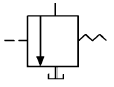
- 릴리프 밸브
- 안전밸브
- 시퀀스밸브
- 무부하 밸브
(정답률: 알수없음)
75. 고속회전하는 로우터에 타격판을 설치하여, 파쇄물에 타격을 가하여 반발판에 충돌 파쇄시키는 것으로, 파쇄물의 모양은 입방체에 가까운 쇄석기는?
- 조오 크러셔(jaw crusher)
- 임팩트 크러셔(impact crusher)
- 코운 크러셔(cone crusher)
- 로드 밀(rod mill)
(정답률: 알수없음)
76. 다음 중 실린더만으로 전후진 양방향의 힘과 속도가 같은 실린더는?
- 양로드식 복동실린더
- 텔레스코픽 실린더
- 램형 실린더
- 디지털 실린더
(정답률: 알수없음)
77. 기관의 SAE 마력을 계산하기 위해서 알아야 할 사항으로 가장 적합한 것은?
- 압축비 및 실린더 내경 치수
- 기관의 회전수 및 회전력
- 실린더 내경 치수 및 실린더수
- 제동마력과 실린더수
(정답률: 알수없음)
78. 굴삭기 제원에서 상부 회전체 중심선에서 버켓 선단까지의 거리를 무엇이라 하는가?
- 붐 길이
- 암 길이
- 작업 반경
- 최대 굴삭 깊이
(정답률: 알수없음)
79. 스크레이퍼의 작업순서가 올바르게 배열된 것은?
- 땅깎기 - 운반 - 스프레딩
- 땅깎기 - 스프레딩 - 운반
- 운반 - 스프레딩 - 땅깎기
- 운반 - 땅깎기 - 스프레딩
(정답률: 알수없음)
80. 로우더(loader)의 적하방식에 의한 분류 형식이 아닌 것은?
- 프런트 엔드형
- 사이드 엔드형
- 백호 셔블형
- 사이드 덤프형
(정답률: 알수없음)